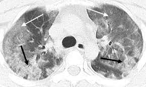
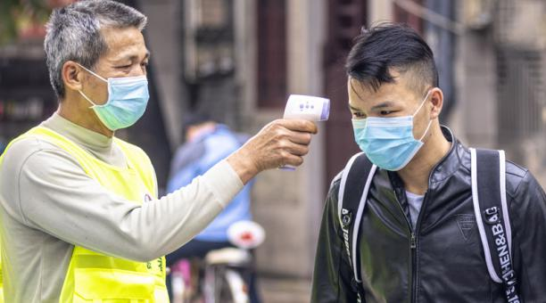

Para determinar la presencia de infección por coronavirus los médicos puede tomar una muestra de nariz y garganta
(nasofaríngea) o de sangre. Existen distintos tipos de test de diagnóstico de coronavirus.
Asimismo, con el fin de contener la transmisión, se efectúa una evaluación a aquellas personas que presentan los
síntomas y que puedan ser proclives a contraer el virus.
.
Contenido
Tomografía de tórax

En casos de sospecha de coronavirus se suele realizar una tomografía de tórax para determinar los síntomas de neumonía,
así como otros análisis de coagulación de sangre, un análisis bioquímico y un conteo sanguíneo. También se realizan
pruebas de anticuerpos.
.
Dato Curioso
Control de la temperatura

El control de la temperatura (con cámaras térmicas y termómetros digitales) de las personas que llegan a un
aeropuerto procedentes de zonas afectadas ha sido una de las medidas que se han puesto en marcha para detectar
posibles casos del Covid-19, tal y como se hizo con los brotes anteriores. También se realizan cuestionarios
a los viajeros; en caso de sospecha, se les somete a evaluación y, en su caso, se les traslada a centros sanitarios.
A medida que ha ido evolucionando la pandemia se han incorporado nuevas formas de detección y diagnóstico de la enfermedad.
.
Contenido
Factores
Los factores usados para decidir si hacerte la prueba para detectar el virus que causa laCOVID-19 pueden variar
de acuerdo a dónde vivas. Dependiendo de dónde estés, quizás necesites que tu clínica te haga un examen preliminar
para determinar si la prueba es apropiada y si está disponible.
Para detectar el virus que causa la COVID-19, un proveedor de atención médica usa un hisopo largo para tomar una
muestra de la nariz o la garganta. Las muestras luego se envían a un laboratorio para analizarlas. Si estás tosiendo
con esputo, esa muestra también se puede enviar al laboratorio para analizarla. La Administración de Alimentos y
Medicamentos de los Estados Unidos (FDA) ha autorizado pruebas para hacer en casa para detectar el virus que
causa la COVID-19. Se pueden conseguir con una receta del médico.
Información de la OMS
NIVEL
¿CÓMO SE TRANSMITE EL CORONAVIRUS?
Contacto físico
Contacto con superficies
Alto
Toser, Estornudar
Mesas, Sillas
Medio
Hablar, Saludar
Objetos personales(celular)
Quédese en casa y practique el aislamiento social o cuarentena